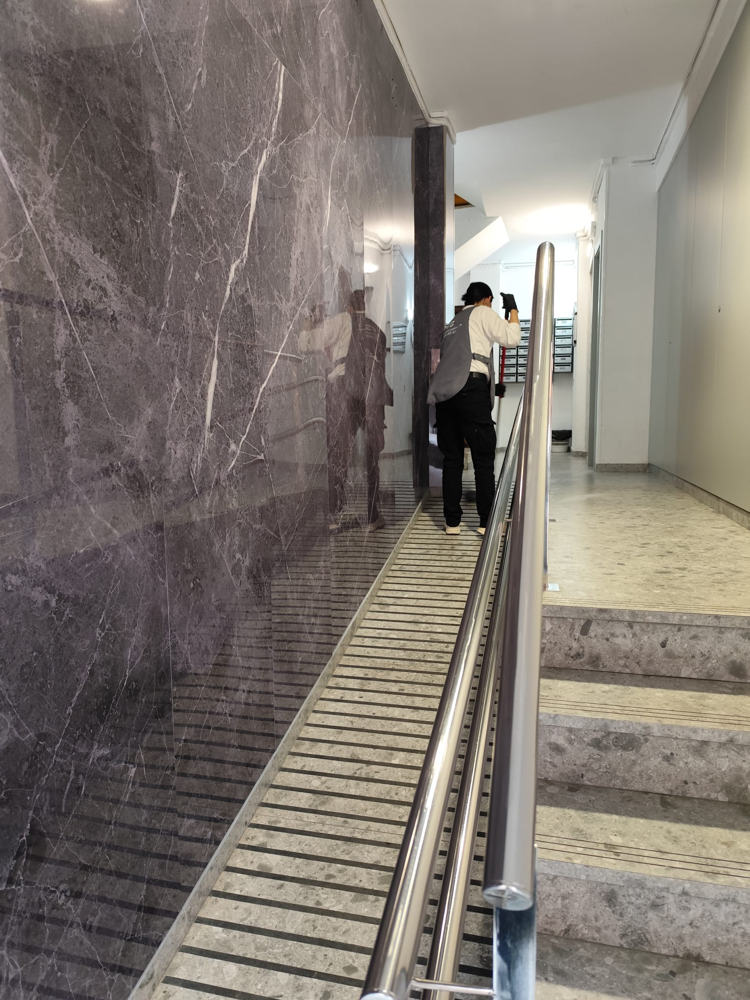
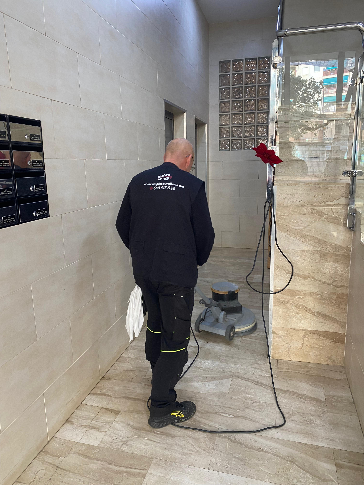

Limpieza profesional para cada espacio
Soluciones completas de limpieza adaptadas a comunidades, empresas y espacios públicos en Sabadell y el Vallès Occidental.

Limpieza de comunidades de vecinos
Sabemos lo importante que es para una comunidad contar con espacios comunes limpios y cuidados. Nuestro equipo garantiza la higiene y el orden en cada rincón de tu edificio, adaptando la frecuencia y el tipo de limpieza a tus necesidades.
- Portales, escaleras y rellanos
- Ascensores y cabinas
- Buzones y zonas de correspondencia
- Gestión de residuos y reciclaje
- Frecuencia diaria, semanal o quincenal
- Productos ecológicos y biodegradables

Limpieza y mantenimiento de cristales
Los cristales son la imagen del edificio. Nuestros técnicos especializados utilizan sistemas profesionales de extensión y productos sin rayas para dejar ventanas, fachadas y escaparates totalmente transparentes y relucientes.
- Ventanas interiores y exteriores
- Fachadas acristaladas y cortinas de cristal
- Escaparates de comercios
- Lucernarios y claraboyas
- Puertas y mamparas de cristal
- Sistemas de pértiga con agua purificada

Limpieza de parkings y garajes
Los parkings acumulan polvo, manchas de aceite y suciedad con rapidez. Nuestro servicio de limpieza de garajes garantiza espacios seguros, higiénicos y con buena imagen para residentes y visitantes.
- Barrido y aspirado industrial
- Eliminación de manchas de aceite y combustible
- Limpieza de paredes y columnas
- Desinfección de zonas de paso
- Garajes comunitarios y aparcamientos públicos
- Maquinaria industrial de barrido en mojado

Limpieza de zonas comunes
Más allá del portal y las escaleras, las comunidades cuentan con múltiples zonas comunes que requieren atención especializada. Nos ocupamos de cada espacio compartido para que todos los vecinos puedan disfrutar de ellos en perfectas condiciones.
- Jardines y zonas verdes comunitarias
- Terrazas y zonas de barbacoa
- Salas de reuniones y locales sociales
- Piscinas comunitarias y vestuarios
- Gimnasios y salas de fitness
- Trasteros comunitarios y cuartos de instalaciones

Limpieza de terrazas y exteriores
Las terrazas, azoteas y patios exteriores acumulan suciedad, musgo y manchas que el mantenimiento ordinario no puede eliminar. Utilizamos hidrolimpiadora de alta presión y productos específicos para devolver a cada superficie su aspecto original.
- Terrazas y azoteas comunitarias
- Patios interiores y exteriores
- Eliminación de musgo y líquenes
- Hidrolimpiadora de alta presión
- Fachadas y muros exteriores
- Baldosa cerámica, hormigón y gres porcelánico

Cuidado integral de pavimentos
Los suelos son uno de los elementos que más impacto visual tienen en un espacio. Ofrecemos tratamientos específicos para cada tipo de pavimento que prolongan su vida útil, mejoran su aspecto y facilitan el mantenimiento diario.
- Abrillantado y cristalizado de mármol y granito
- Limpieza profunda de terrazo y baldosa
- Encerado y protección de parquet
- Sellado y protección de pavimentos porosos
- Decapado y renovación de PVC y vinílico
- Fregado con maquinaria fregadora industrial